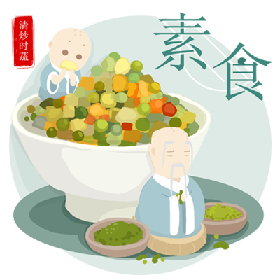

素名人影片分享
天候無常,冷的時候很冷,熱的時候很熱,氣候變遷您有感受到嗎?聯合國指出,肉食是全球暖化的主因,吃素可以減碳。只要一人一天不吃肉,就能減碳7公斤。吃素還有什麼好處,來看看素名人怎麼說。
🌟全球素食名人 吃素好因緣
🌟103歲: 全球最老純素醫生！
關於素食
素食理念
素食主義（英語：vegetarianism），又稱蔬食主義，素食，蔬食（英語：plant-based food）等，是一種有關飲食的文化，主張不食用飛禽、走獸、魚蝦等動物的身體，也就是肉類，實踐這種飲食文化的人被稱為素食主義者（vegetarian），只食用五穀、蔬菜和水果等植物及其製品。世界各國或不同文化中的素食主義有所不同，有些素食主義者食用蜂蜜、奶類、起司、蛋類等不殺害動物也能取得的動物產出品。純素食主義者不食用動物相關製品，有些宗教也主張不食用具有強烈刺激性的植物，如五辛，主張素食主義的原因包括環保、健康、動物權利等議題，目前擁有全球最高素食人口比例與素食人口數的地方是印度。
相信對許多人而言，Vegan是個陌生的名詞。或許有人會認為Vegan等同於我們平常所說的素食（Vegetarian），事實上Vegan指的是純素主義，中心理念是「愛護動物」，不單單只限於飲食層面，同時也適用於日常的生活態度。因此純素主義意味著不食用任何動物相關製品、不使用動物毛皮、並反對任何剝削動物權益的行為理念。
影片:什麼是純素主義
Not Another Jumbotron
Cras justo odio, dapibus ac facilisis in, egestas eget quam. Fusce dapibus, tellus ac cursus commodo, tortor mauris condimentum nibh, ut fermentum massa justo sit amet risus.
Data. Data. Data.
This example is a quick exercise to illustrate how the default responsive navbar works. It's placed within a .container to limit its width and will scroll with the rest of the page's content.
Buy Now!
Cras justo odio, dapibus ac facilisis in, egestas eget quam. Fusce dapibus, tellus ac cursus commodo, tortor mauris condimentum nibh, ut fermentum massa justo sit amet.
健康素知識


素友好連結